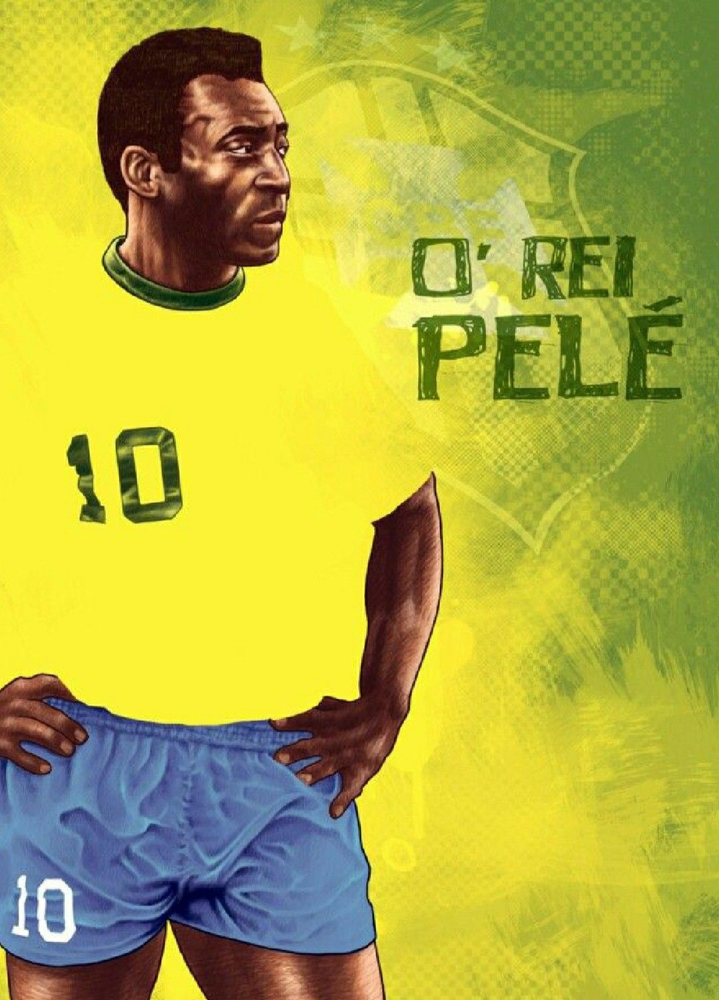
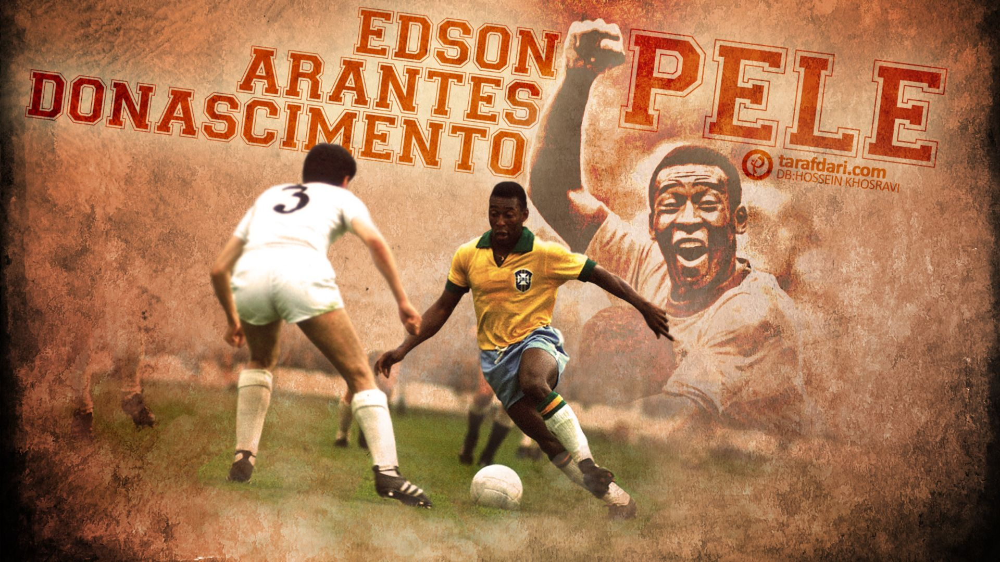
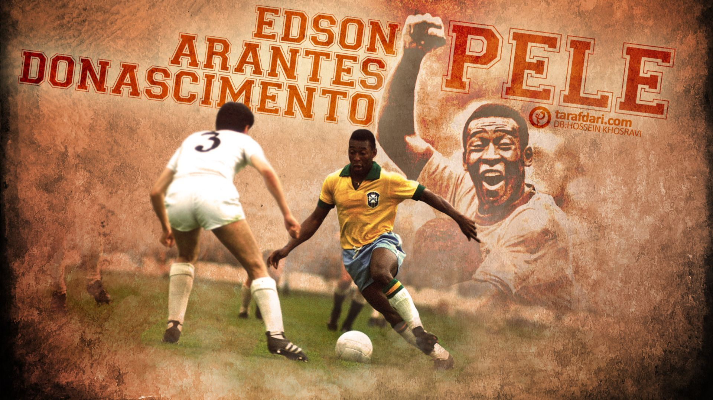
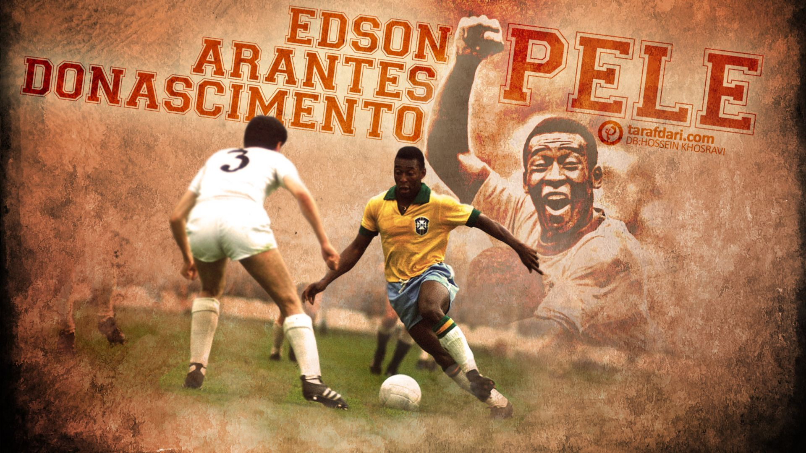

Edson Arantes do Nascimento, better known as Pelé, is a name that resonates with greatness in the world of football. Born on October 23, 1940, in Três Corações, Brazil, Pelé rose from humble beginnings to become the "King of Football." With unmatched skill, creativity, and a record-breaking 1,283 career goals, he captivated the world. A three-time FIFA World Cup champion, Pelé's legacy goes beyond the pitch as he continues to inspire and unite fans globally. His story is one of extraordinary talent, hard work, and an unwavering passion for the beautiful game.
Career Highlights
- 3× FIFA World Cup Champion: Pelé led Brazil to victory in 1958, 1962, and 1970, becoming the only player to win three World Cups.
- 1,283 Career Goals: His prolific goal-scoring includes official and unofficial matches, showcasing his extraordinary talent.
- FIFA Player of the Century: In 1999, Pelé was named FIFA Player of the Century, cementing his status as one of the greatest ever.
- Club Success with Santos FC: Pelé brought international fame to Santos FC, winning numerous titles, including the Copa Libertadores and Intercontinental Cup.
- Ambassador for the Sport: Beyond his playing career, Pelé has been a global ambassador for football, promoting the sport and engaging in philanthropic activities.
Gallery

 

